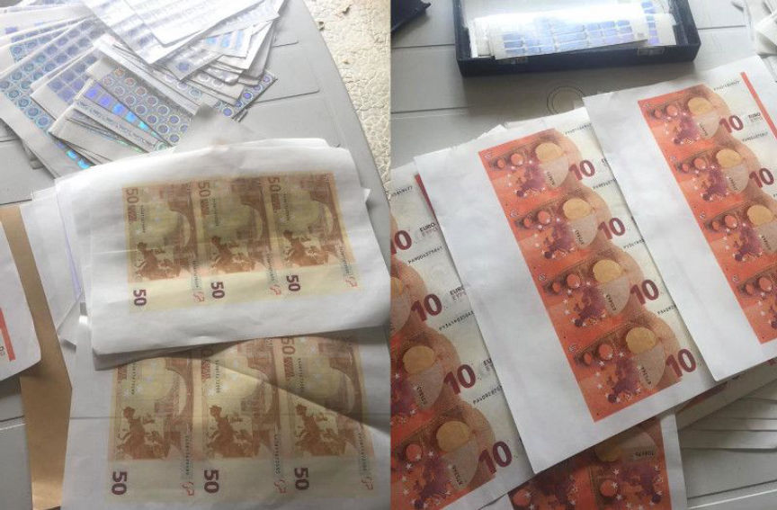
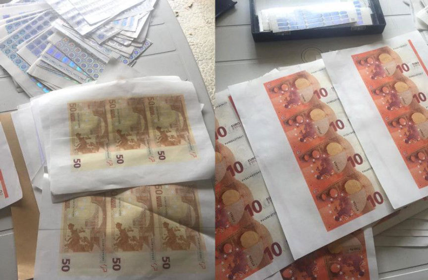

Second-Largest Darkweb Counterfeiting Ring Busted in Portugal
The Portuguese Judicial Police (Polícia Judiciária), with support from Europol, dismantled Europe’s second-largest counterfeit currency network on the darkweb, according to an announcement from Europol. The operation led to seizures and arrests throughout Europe, notably in Portugal, Spain, France, and Germany.
The operation resulted in the seizure of more than counterfeit Euros worth more than €1.3 million ($1.4 million).
In Portugal alone, law enforcement conducted eight searches at homes and other locations. Those searches led to the arrest of five people, three men and two women, for counterfeiting and organized crime. In the searched houses, officers of the Judicial Police found 1290 counterfeit €50 notes and 543 counterfeit €10 notes, as well as a number of items linked to the counterfeit banknote production industry. The seized items included “computers, printers, security paper incorporating security filament, holograms and self-adhesive holographic bands, ultraviolet inks, and ink cartridges.”
The criminal network, according to the Judicial Police, had produced more than 26,000 counterfeit banknotes since the start of their operation in 2017.
Counterfeit banknotes were seized almost everywhere in Europe, with a higher incidence in France, Germany, Spain and Portugal, reaching a value of over 1 million and 300 thousand euros.
The suspected counterfeiters sold the notes on “one of the darknet’s main markets.” Some orders, however, were made through encrypted chat platforms. After the counterfeiters received payment (through cryptocurrency) for an order of counterfeit notes, they would ship the notes to the buyer through the postal system. They shipped all notes from Portugal.
All of their customers apparently recognized the “high quality of the notes produced by this criminal network.” The notes had security filaments, holograms, the right watermarks, and clean cuts, among other features that set them apart from the notes produced by other counterfeiters.
A Portuguese citizen residing in Colombia allegedly led the operation. Colombian authorities arrested the suspected counterfeiter under an International Arrest Warrant issued by the Portuguese authorities.
If the network was truly large, their sudden disappearance from darkweb marketplaces will not go unnoticed. Last month, someone contacted this author about the arrest of one counterfeit vendor and the disappearance of another. These disappearances might have a connection to this case. If any readers know more, feel free to contact DarknetLive with any additional information.
Archived Europol Press Release (.onion) | Archived PJ Announcement .onion
Europol’s Involvement, per their own announcement:
Europol supported this operation since the beginning with counterfeit and dark web experts. Several meetings were held at Europol, and intelligence notification packages were issued as well. Apart from the financial support, the European law enforcement agency provided the Portuguese authorities with analytical and operational support during the action day. One Europol’s analyst was deployed for on-the-spot support with a Mobile Office during the action day.
The operation resulted in the seizure of more than counterfeit Euros worth more than €1.3 million ($1.4 million).
In Portugal alone, law enforcement conducted eight searches at homes and other locations. Those searches led to the arrest of five people, three men and two women, for counterfeiting and organized crime. In the searched houses, officers of the Judicial Police found 1290 counterfeit €50 notes and 543 counterfeit €10 notes, as well as a number of items linked to the counterfeit banknote production industry. The seized items included “computers, printers, security paper incorporating security filament, holograms and self-adhesive holographic bands, ultraviolet inks, and ink cartridges.”
Pictures of Counterfeit Euros from the Operation | Credit: Europol
The criminal network, according to the Judicial Police, had produced more than 26,000 counterfeit banknotes since the start of their operation in 2017.
Counterfeit banknotes were seized almost everywhere in Europe, with a higher incidence in France, Germany, Spain and Portugal, reaching a value of over 1 million and 300 thousand euros.
The suspected counterfeiters sold the notes on “one of the darknet’s main markets.” Some orders, however, were made through encrypted chat platforms. After the counterfeiters received payment (through cryptocurrency) for an order of counterfeit notes, they would ship the notes to the buyer through the postal system. They shipped all notes from Portugal.
All of their customers apparently recognized the “high quality of the notes produced by this criminal network.” The notes had security filaments, holograms, the right watermarks, and clean cuts, among other features that set them apart from the notes produced by other counterfeiters.
A Portuguese citizen residing in Colombia allegedly led the operation. Colombian authorities arrested the suspected counterfeiter under an International Arrest Warrant issued by the Portuguese authorities.
If the network was truly large, their sudden disappearance from darkweb marketplaces will not go unnoticed. Last month, someone contacted this author about the arrest of one counterfeit vendor and the disappearance of another. These disappearances might have a connection to this case. If any readers know more, feel free to contact DarknetLive with any additional information.
Archived Europol Press Release (.onion) | Archived PJ Announcement .onion
Europol’s Involvement, per their own announcement:
Europol supported this operation since the beginning with counterfeit and dark web experts. Several meetings were held at Europol, and intelligence notification packages were issued as well. Apart from the financial support, the European law enforcement agency provided the Portuguese authorities with analytical and operational support during the action day. One Europol’s analyst was deployed for on-the-spot support with a Mobile Office during the action day.